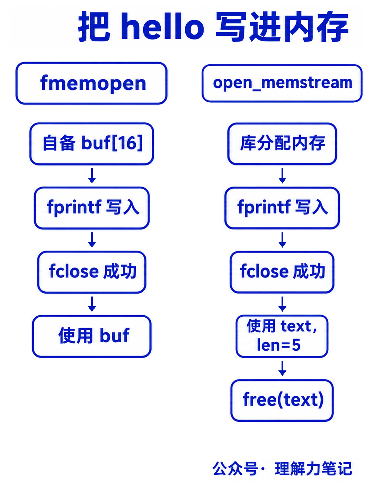

fprintf 可以向文件写入文本，也可以向内存写入文本。想把 hello 写进一个字符串，可以先用下面两个函数之一打开内存流，再把返回的 FILE * 传给 fprintf。
fmemopen：自己准备数组，函数把数组作为读写目标。 数组有多大，就只能用多大的空间。open_memstream：不用先准备数组，库负责分配内存。 内容变长时，库会按需扩大空间。下面分别用它们写入 hello，看看参数怎么传、结果从哪里取、用完怎么收尾。
这篇文章怎么读？
无论你为什么点进来，都能各取所需——只解决手头问题，看第一章就够；想彻底搞懂，再往下读。
| 你是谁 | 看哪一章 | 会得到什么 |
|---|---|---|
| 搜索者 / 被推荐者 | 第一章 · 先解决问题 | 最快的答案（知其然） |
| 学习者 | 第二章 · 机制解释 | 底层的来龙去脉（知其所以然） |
| 编程者 | 第三章 · 工程使用 | 正确、能直接用的写法 |
| 求职者 | 第四章 · 面试提炼 | 会怎么问、怎么答 |
下面三个代码块按顺序放进同一个 main 函数，头文件见文末。先准备一个 16 字节数组，再打开内存流：
三个参数依次是：数组地址、数组容量、打开模式。这里的 "w" 表示从数组开头写入。成功返回 FILE *，失败返回 NULL。
buf 是存放结果的数组，fp 是后续传给 fprintf、fclose 的流指针，两者不要混用。
接着写入并关闭：
fprintf 的第一个参数是 fp，但内容最终进入的是 buf。成功关闭后，就可以把 buf 当作普通字符串使用：
实际输出：
完整程序保存在配套示例 fixed_example.c 中。
上面的检查分别解决两个问题：
fprintf 失败返回负数；有些错误要到 fclose 刷新时才出现，因此两处都检查。\0 留位置。 hello 占 5 字节，加上 \0 至少需要 6 字节。n >= sizeof buf 时，不能把结果当作完整字符串使用。fmemopen 不会帮你扩大数组。上例的数组属于 main，关闭流后数组仍然有效，不需要也不能对这个栈数组调用 free。流还没关闭时，数组必须一直存在。
这个函数也支持读取已有内容：用 "r" 打开后，可以通过 fgets 等函数读取数组。本文只演示写入。
如果不想预先确定数组容量，可以使用 open_memstream。先准备两个变量接收结果：
这里传的是 text 和 len 的地址，不是一个预先分配好的数组：
text 用来接收结果缓冲区的地址。len 用来接收内容长度，不包括末尾的 \0。函数需要修改这两个变量，所以调用时要加 &。两个变量必须一直有效，直到流关闭。open_memstream 创建的是写入流，不需要再传 "w"。
然后写入 hello 并关闭流：
成功关闭后，text 指向生成的字符串，len 是 5。此时可以读取结果；用完要自己释放：
实际输出：
同样，这三个代码块按顺序组成 main 的函数体，完整程序是 dynamic_example.c。return rc < 0 表示打印失败时程序返回 1，否则返回 0。
这里的 fclose 关闭了流，但保留了结果内存。 因此还需要 free(text)。顺序是先关闭、再使用结果、最后释放；不要在流还开着时提前释放，也不要在释放后继续读取。
本例在关闭失败时直接结束进程，不再访问 text；这段退出逻辑用于演示程序，不是供长期运行的程序复用的错误清理函数。

图中只画写入、关闭均成功的路径；失败时按代码检查返回值，不使用未确认的结果。
可以，但要先调用 fflush(fp)，确认返回 0，再读取 text 和 len。不要在刚调用完 fprintf 后，就假定这两个变量已经更新。
继续写入后，再次查看结果前要重新成功刷新，并使用更新后的 text 和 len。扩容可能换一块内存，之前保存的地址不能一直沿用。
如果只在全部写完后取一次结果，就像上面的例子一样，成功关闭后再取即可，不必额外插入 fflush。本文都是从头顺序写入，没有中途定位。
两个示例都在源文件开头放了以下定义和头文件：
这两个函数属于 POSIX 接口，不属于 ISO C 标准。示例已在 macOS 编译运行，未在 Linux 主机实测；移植到其他环境时要确认支持情况。
只做一次简单的格式化输出时，snprintf 通常更直接。已有代码在使用 fprintf、fputs 等函数，或者需要连续多次输出到内存时，再考虑这两个接口。
本文为公众号「理解力笔记」原创。转载请联系作者，并保留出处。